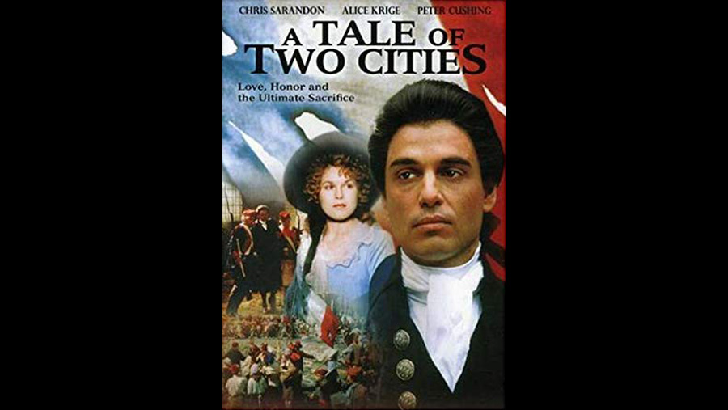

1980

CAST
Sydney Carton
-
Chris Sarandon
Charles Darnay
-
Chris Sarandon
Lucie Manette
-
Alice Krige
Jarvis Lorry
-
Kenneth More
Dr. Alexandre Manette
-
Peter Cushing
Miss Pross
-
Flora Robson
Madame Defarge
-
Billie Whitelaw
Monsieur Defarge
-
Norman Jones
'The Vengeance'
-
Anna Manahan
C J Stryver
-
Nigel Hawthorne
Jeremiah 'Jerry' Cruncher
-
George Innes
John Barsad
-
David Suchet
Marquis St-Evrémonde
-
Barry Morse
Gabelle
-
Gerald James
Gaspard
-
Bernard Hug
Seamstress
-
Valérie de Tilbourg
Attorney General
-
Robert Urquhart
Court President
-
Bernard Archard
Little Lucie
-
Martha Parsey
Victor
-
Robin Scobey
Chemist
-
John Kidd
CREATIVE TEAM
Director
-
Jim Goddard
Screenplay
-
John Gay